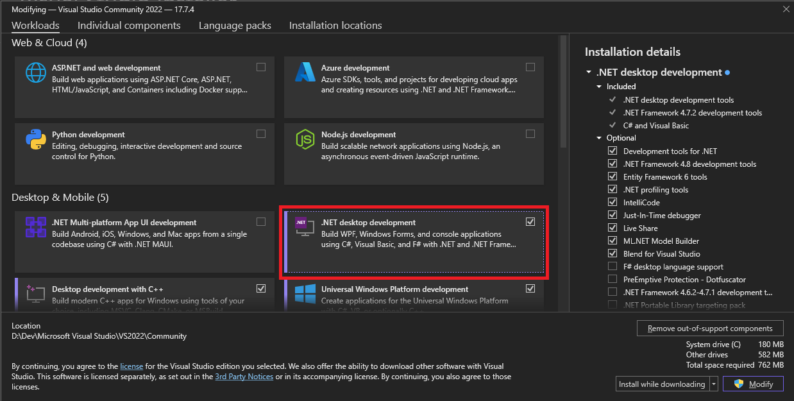
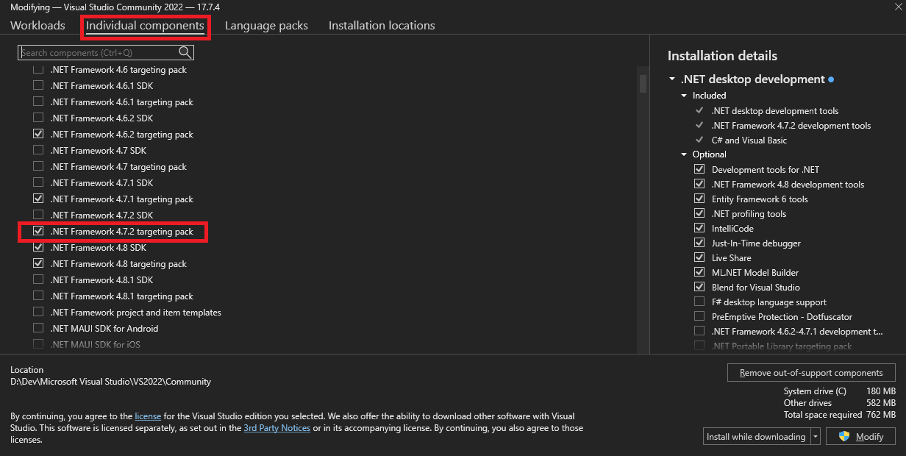
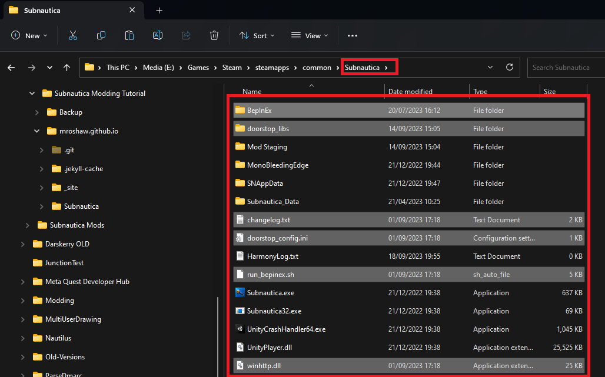
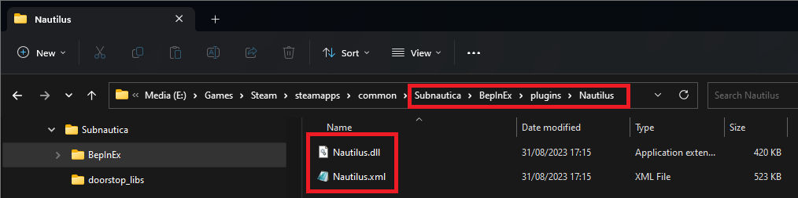
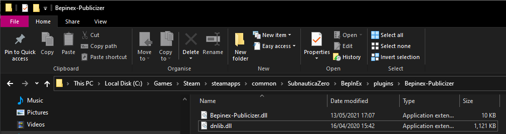
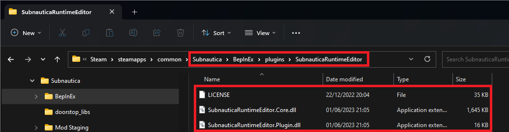

Installation and Set-up
When I set up a Dev environment, I like to keep everything together. I have a dedicated 1TB SSD on my machine that I have mounted as D: and I put everything development related into D:\Dev. You can do whatever you want, go with defaults, or put stuff where it's accessible for you.
Visual Studio
Download and run the Visual Studio installer and pick the ".NET desktop development" Workload:

You'll also need to ensure you pick the ".NET 4.7.2 targeting pack" from the "Individual components" tab:

That's it, really. The setup process is pretty straightforward these days and VS installs a much smaller footprint than it used to.
Note that it's really important that you install the ".NET 4.7.2 targeting pack". If you don't, you'll be unable to select the correct framework when creating your mod project.
dnSpy
Simply download dnSpy and unzip it to a folder location. Simple as that!
BepInEx Pack
Download the latest version from Nexus. Unzip the file to your game folder, and everything you need will be in the right place. You'll find a folder called "plugins" where you'll put your mod DLLs. After installation, your game folder should look something like this:

Vortex
This is entirely optional for mod development, but I recommend it anyway for playing with mods and supporting the Nexusmods community.
Simply download this from Nexusmods and run the installer. Within Vortex, get yourself logged in and add Subnautica and / or Below Zero to your managed games. This will set everything up to download mods direct from the Nexusmods site.
Nautilus
Optional but highly recommended! If you've installed Vortex, you can install Nautilus by visiting it's mod download page on Nexus, and click "Mod Manager Download". Alternatively, download the ZIP file from Nexus and extract the contents into the BepInEx folder in your game folder: \

BepExIn Publicizer
I really recommend downloading this tool and going through the process documented below. It will enhance your modding experience no-end and unlock a whole load of potential that you'd have to do without.
Unzip the file that you download into \

Run the game then exit. Return to Windows Explorer and go to this folder:
<game>\SubnauticaZero_Data\Managed\publicized_assemblies
You'll see some new files that we'll include in our project. At this point, you can delete the Publicizer plugin files (don't delete the publicized DLL files!) or leave them where they are.
Subnautica Runtime Editor
Another BepInEx plugin that I really, really recommend. Installation follows the same pattern as the other BepInEx plugins, which is to download the plugin ZIP file and extract to \

GitHub Desktop
Again, totally optional. In fact, Visual Studio will give you everything you need to manage your code. I just find the desktop tool gives me a warm fuzzy feeling that my code is safe, and nothing is ever lost! Download and install using the installer, following the prompts. Simples!